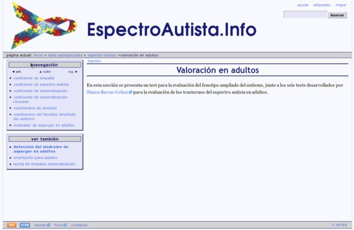

Ayuda
Esta página y sus subsecciones ofrecen diversos tipos de información y ayuda, a fin de comprender mejor la estructura del sitio web y así poder navegar entre su contenido de forma ágil y eficiente.
Estructura de las páginas
A continuación se presenta una breve descripción de la estructura de todas las páginas de EspectroAutista.Info.

- Cabecera: común a todas las páginas.
- Lazo: identifica gráficamente al sitio, siendo al mismo tiempo un enlace a la página de inicio.
- Ayudas a la navegación: permite acceder a esta sección de ayuda, y ofrece accesos rápidos al índice de etiquetas y al mapa del sitio.
- Buscador: permite efectuar búsquedas en el sitio usando el motor de Google.
- Ruta: muestra el camino a seguir desde la página de inicio hasta la página actual, y viceversa.
- Cuerpo: contiene la parte realmente específica de cada página.
- Menú: presenta opciones propias del contenido de la página.
- Contenido: el recurso presentado por la página.
- Paneles de navegación: situados a la izquierda del cuerpo de la página,
su presencia puede variar según cada una de las páginas:
- Navegación jerárquica: presenta las subsecciones de la página actual y, si éstas no existen, a las páginas situadas al mismo nivel jerárquico.
- Archivo de noticias: permite la navegación cronológica por las noticias presentadas en el sitio.
- Cambios recientes: lista las páginas recientemente incorporadas al sitio.
- Etiquetas de la página: etiquetas para la clasificación de la página.
- Pie: común a todas las páginas.
- Noticias en formato RSS 2.0 y Atom: últimas noticias publicadas en el sitio, presentadas en los dos formatos indicados.
- Encuesta de opinión: formulario mediante el cual expresar la opinión sobre el sitio.
- Foro de discusión y anuncios: lista abierta a la participación de todos los interesados en los temas tratados en el sitio.
- Dirección de contacto: dirección de correo electrónico de contacto.
Aviso importante
La edición y mantenimiento de EspectroAutista.Info se ha descontinuado. Para conocer todos los detalles lea la última noticia.